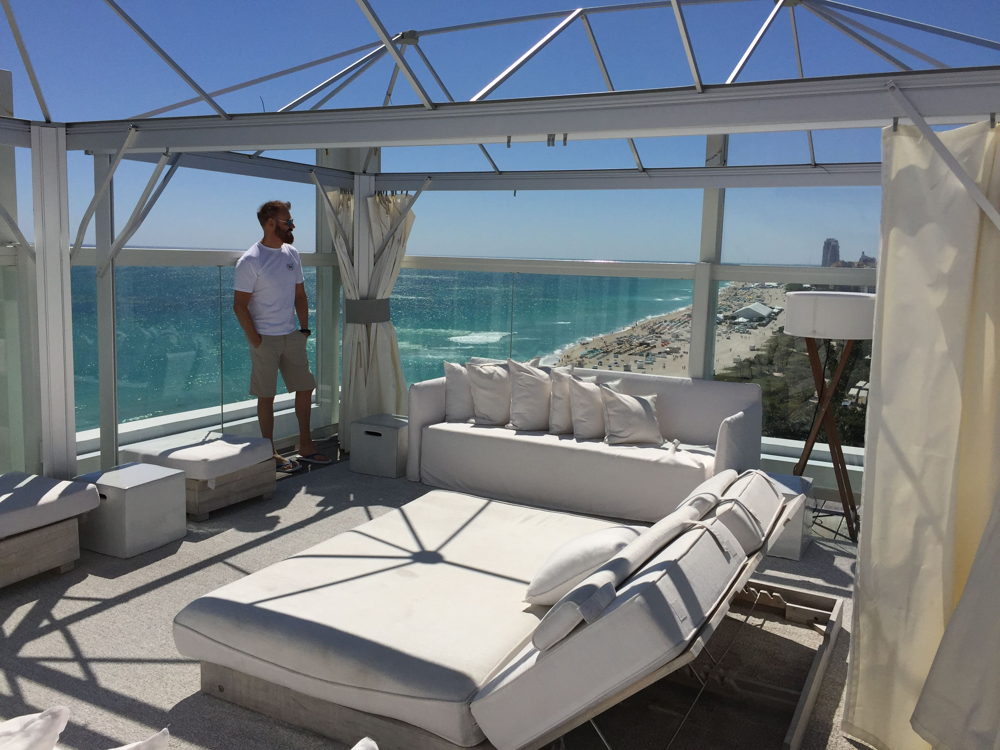
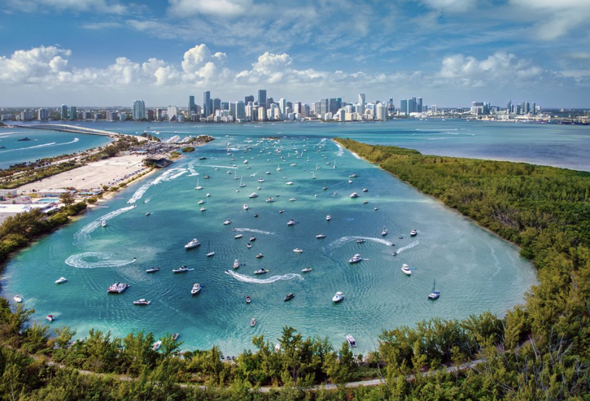
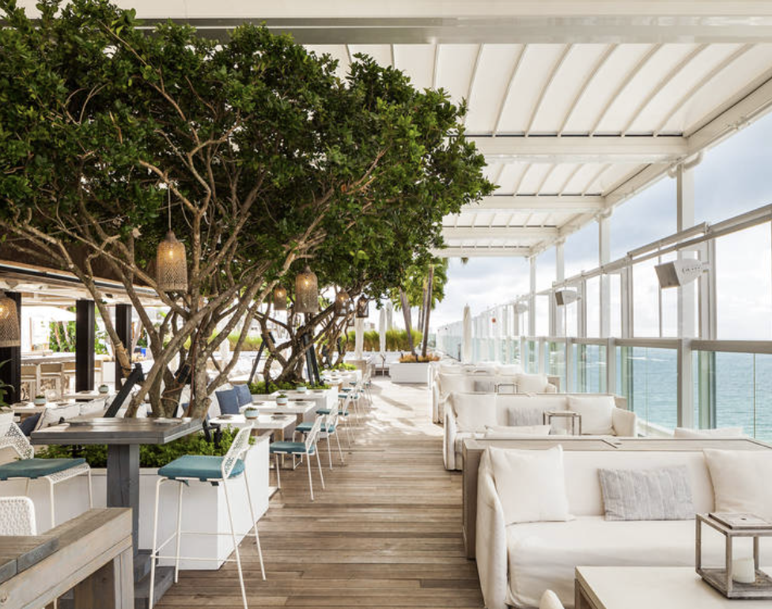
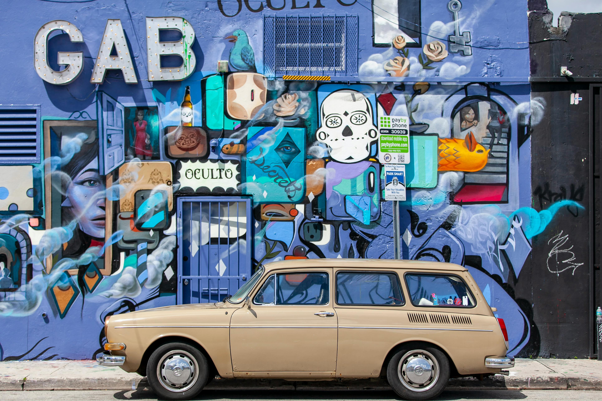
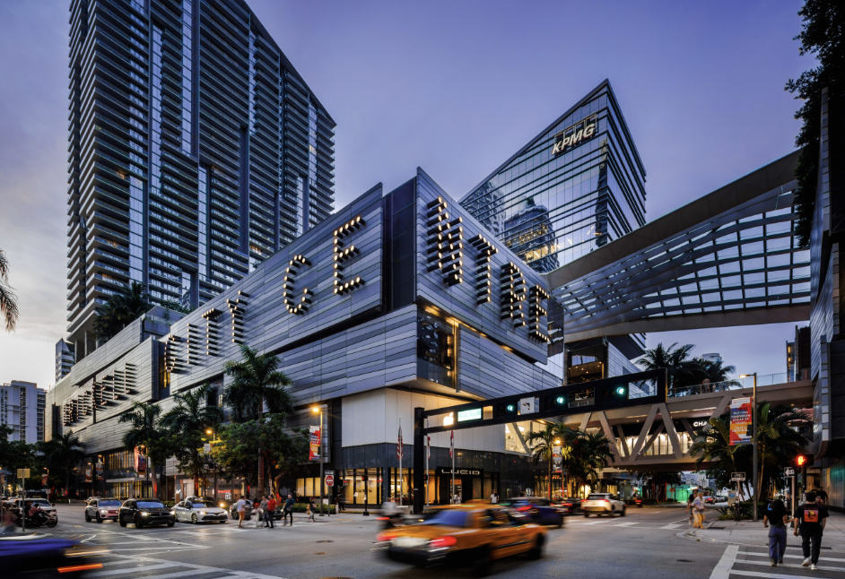
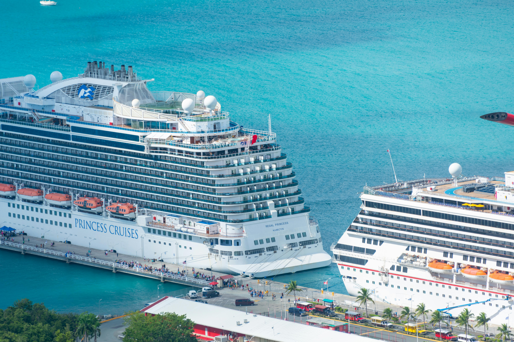
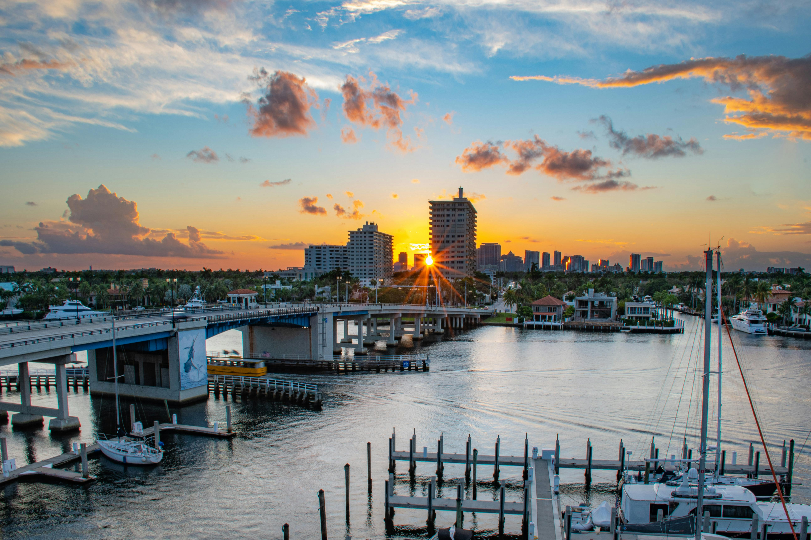

Miami video on Lipe Travel Show
The episode is the ideal starting point to get into the mood of the destination. After that, this page helps you turn inspiration into practical decisions.
Miami remains strong because it delivers very efficient combinations: beaches, hotels, shopping, skyline, cruises, neighborhoods with very different personalities and a premium reading that can range from easy lifestyle to a more sophisticated trip. The key is less about “going to Miami” and more about choosing the right base.
This page combines the channel episode with a more strategic planning layer: where to stay according to your profile, when Fort Lauderdale is worth it, when Brickell makes more sense, when the premium beach side speaks louder and where Miami works best as a gateway for cruises, shopping and combinations with Orlando.

The episode is the ideal starting point to get into the mood of the destination. After that, this page helps you turn inspiration into practical decisions.
Miami is not just one trip. South Beach, Brickell, Downtown, Mid Beach, Sunny Isles, Key Biscayne, Fisher Island and Fort Lauderdale deliver very different experiences. What changes the final result of the trip is the combination of neighborhood, rhythm, budget, profile and what you want to prioritize.
Before choosing a hotel or neighborhood, it is worth defining the narrative of the trip. In Miami, this saves time, reduces mistakes and greatly increases the chance that you will enjoy the destination in the right way.
It works best with a simple reading: South Beach or Miami Beach + a bit of city, shopping and 3 to 5 well-planned days.
It works beautifully when the trip invests in a better hotel, rooftop, the right restaurant and a base that feels more charming or more premium.
South Beach, Brickell and the nightlife axis remain strong for groups who want mobility, energy and a good evening scene.
Miami works well when you combine urban shopping, premium malls and outlets without turning the trip into a constant rush.
Bal Harbour, Sunny Isles, Key Biscayne and a few tailor-made experiences elevate the perception of the destination considerably.
Miami and Fort Lauderdale fit extremely well before embarkation or as a slower landing after the ship.
A very efficient combination for families and groups, especially when travelers want beach time at the beginning or end of the trip.
Perfect for those who want to mix city, sea, shopping and hotels in a trip that feels bigger without becoming too tiring.
In Miami, choosing the wrong base can give you the wrong feeling of the destination. Choosing well makes the city click.
Best for travelers who want a more urban Miami, skyline, strong restaurants, shopping, rooftop bars and a more contemporary mood than a touristic one.
It makes sense for shows, games, events, the port, easy movement and a trip that feels more like a city stay than a resort stay.
The classic reading of Miami: beach, walkability, hotels with personality, nightlife and the image many people still have of the city.
More resort, more beach, more downtime. It works better for travelers who want sea and hotel comfort with less pressure from the agenda.
A smart base for those who want a good beach, marina, Las Olas, a calmer rhythm and excellent logic for pre- and post-cruise stays.
Bal Harbour, Sunny Isles, Key Biscayne and Fisher Island enter the conversation when the trip calls for more discreet luxury, a better beach and a true sense of retreat.

For many travelers, the best Miami is not exactly in the middle of the buzz. Bal Harbour, Sunny Isles, Key Biscayne and some nearby islands and resorts work beautifully for those who want cleaner beaches, better hotels, a more private atmosphere and a trip that feels more premium.
Miami works precisely because it does not depend on a single narrative. It can be sunny, creative, urban, premium or practical.



South Beach and Miami Beach remain strong, but the experience changes a lot when you upgrade the hotel or choose a calmer area.
If you like restaurants, urban shopping, skyline and a more contemporary city feel, Brickell almost always delivers better than the classic beach reading.
Urban art, cafés, bars and a less obvious Miami. It works very well for mixing strong visuals with a cooler, more contemporary program.
For shopping, the ideal approach is not to treat everything as one big block. There is a major difference between Brickell’s urban shopping, the luxury of Bal Harbour, the lifestyle of the Design District and the more utilitarian outlet routes.

In Miami, a luxury car is not a logistical necessity. It is a language. It makes sense when the trip is more lifestyle-driven, focused on celebration, couples, premium hotels, content or simply when the traveler wants to experience the city in a more aspirational way.

Few destinations work so well as a combination base. Miami can be beach, city, shopping and cruise within the same trip.

One or two nights before embarkation make a big difference. You reduce logistical pressure and still get to enjoy the city more calmly.

It makes a lot of sense when the trip calls for beach, marina, a bit less chaos and a lighter reading at the beginning or end of the itinerary.
Without falling into the cliché of “just nightlife,” Miami remains very strong in rooftops, waterfront dining, bars with atmosphere and restaurants that mix visuals, energy and service. Brickell, Miami Beach and Wynwood usually deliver very different readings from one another.
Great for travelers who want sea, hotel energy, drinks, beautiful dinners and a night that feels more visual than necessarily intense.
A great reading for those who like skyline, strong restaurants, lounges and a more urban, contemporary pace.
Best for those who prefer art, bars, music, casual chic and a city that feels less polished and more alive.
I can help you design the logic of the trip — first time, couple, shopping, cruise, premium travel, Miami + Orlando or a combination with Fort Lauderdale and the Caribbean. The difference here is choosing the right base, rhythm and type of experience.